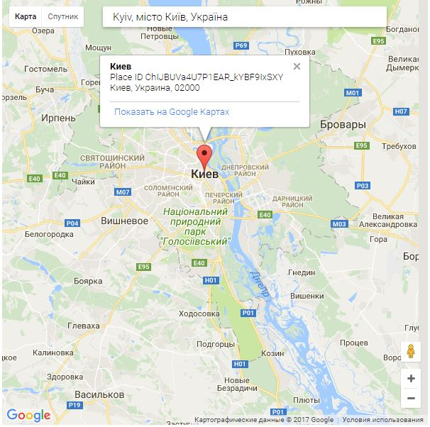

Ознайомився
Оскільки це завдання на API, то найкращим його рішенням, мені здалось, є вбудувати цей запит у сторінку, що видає актуальні (по часу та оптимальності) на даний момент маршрути з Києва до Львова (в даному випадку - автомобільні):
Версію xml файлу з актуальних (по часу та оптимальності) маршрутах можна отримати за цим посиланням
А ось файл збережений на моменті виконання завдання:
XMLДоказ, що я скористався відповідною функцією пошуку місця нна Google places (хоча я також його знав із xml файлу із 2-го пункту)
Для отримання детальної інформації про місце треба було зареєструватися на Google APIs і отримати API key. В наступному в налащтуванні облікового запису необхідно було активувати послугу Google places web, інакше відповідь про деталі поверталась негативна.
Версію xml файлу з актуальними деталями про Київ можна знайти за цим посиланням
А ось файл xml з інформацією про Київ збережений на моменті виконання завдання:
XML